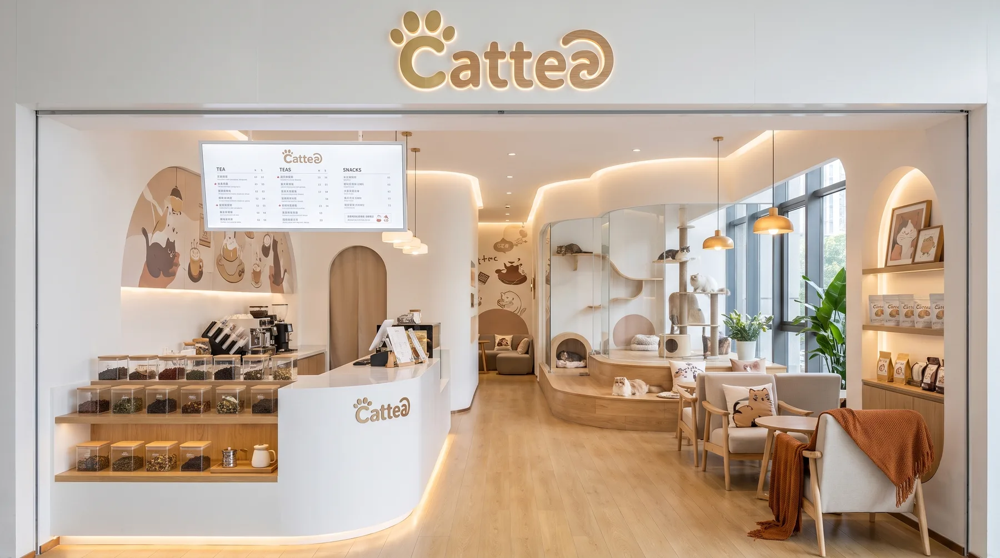
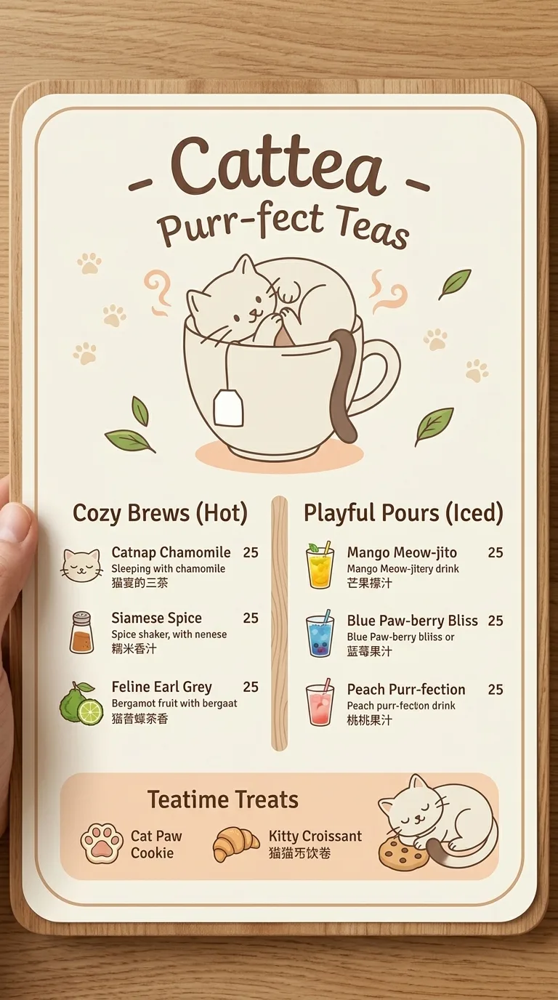
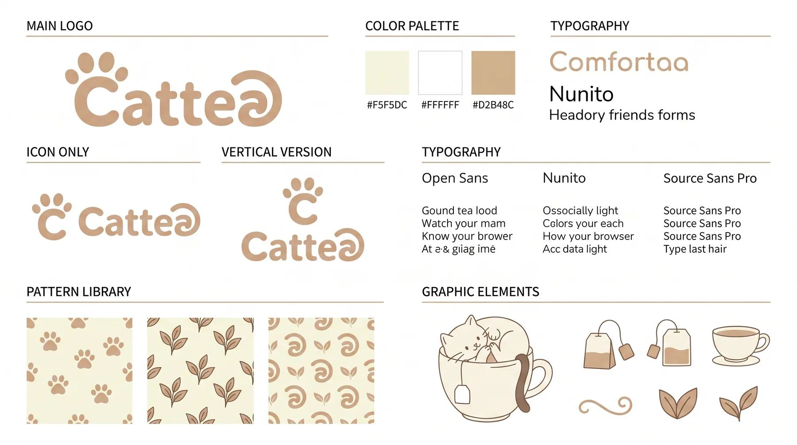
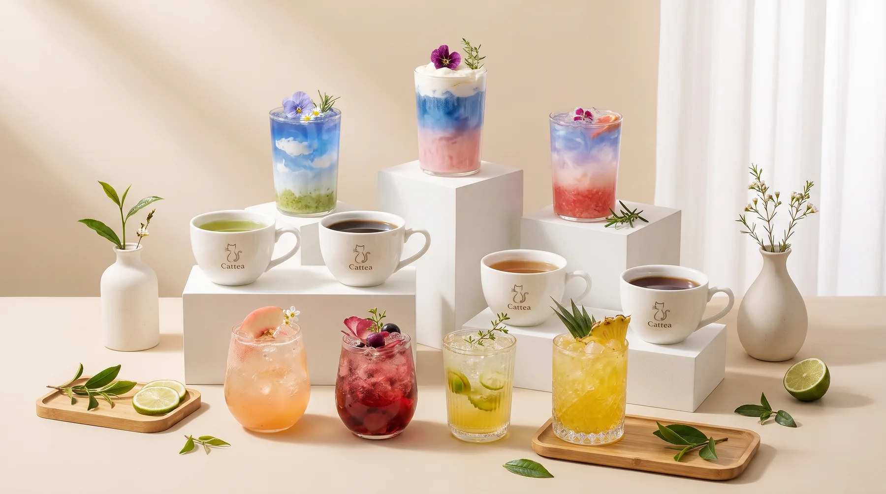
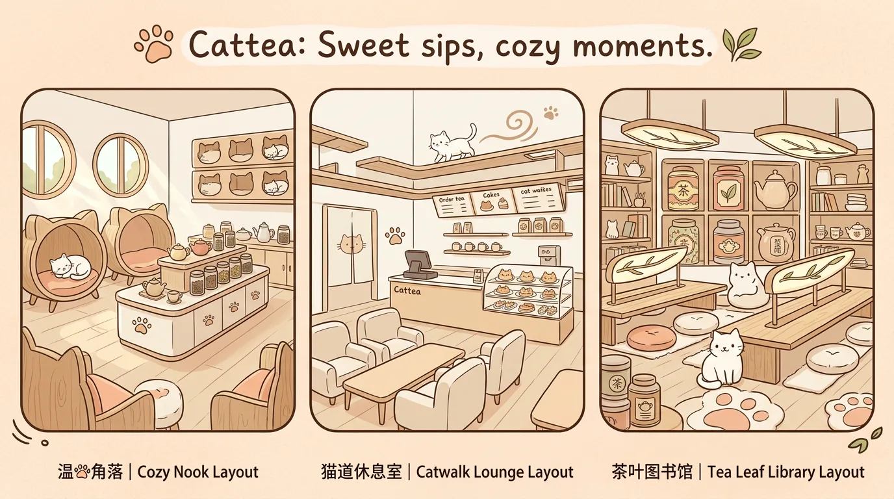
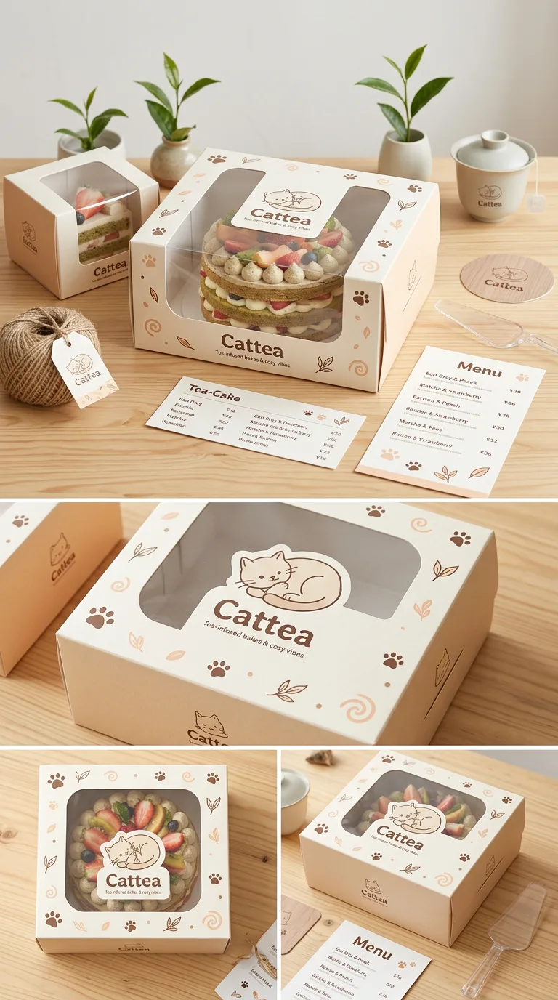
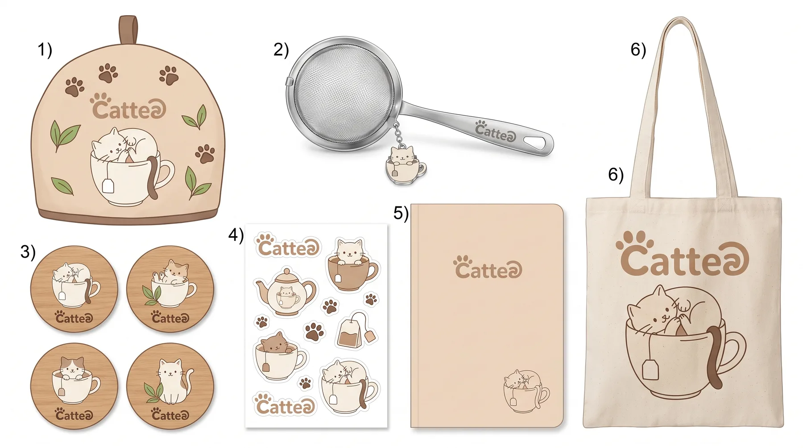
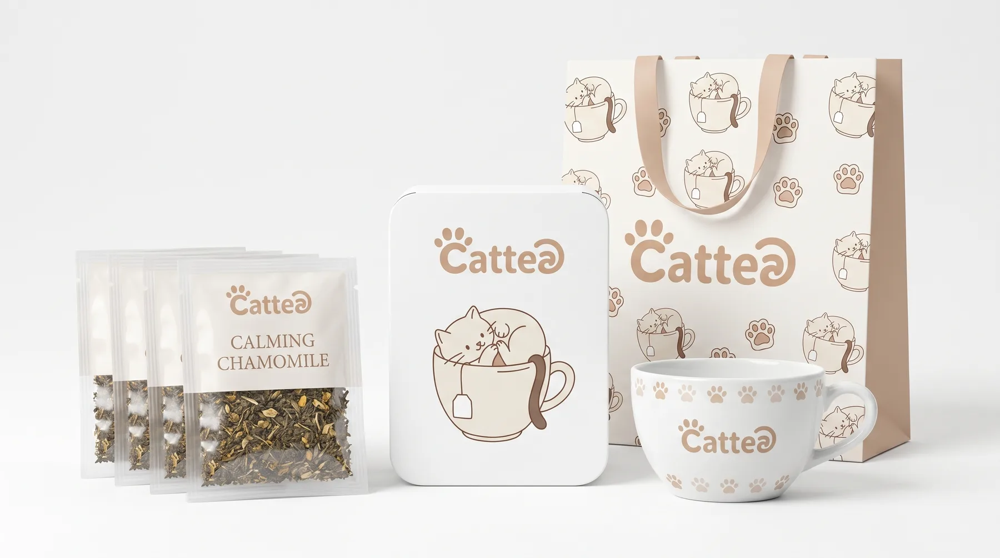

Brand & Space / PROJECT 03
Cattea
Cattea · 茶饮品牌
「Cattea」是一只蜷在茶杯里喝奶茶的小白猫，主打「把茶杯当作猫窝」的暖系治愈体验。
- ROLE
- 品牌识别与视觉系统设计
- TIME
- 项目年份待确认
- TOOLS
- 设计工具清单未提供
- TYPE
- Visual design study
- STATUS
- Independent visual study

01 / ONE-LINE CONCEPT
One-line concept
「Cattea」是一只蜷在茶杯里喝奶茶的小白猫，主打「把茶杯当作猫窝」的暖系治愈体验。
02 / VISUAL SYSTEM
Visual system
- IP 主形象：蜷坐茶杯的小白猫（线条版 + 拟人版两套）
- 色彩：Comfortaa 棕 #D2B48C + 米白 #F5F5DC + 奶油 #FFFFFF
- 菜单：Cozy Brews（热饮）+ Playful Pours（冰饮）+ Teatime Treats
- 门店三种布局：Cozy Nook / Catwalk Lounge / Tea Leaf Library



04 / APPLICATIONS
Applications



05 / FINAL OUTPUT
Final output
「Cattea」是一只蜷在茶杯里喝奶茶的小白猫，主打「把茶杯当作猫窝」的暖系治愈体验。整套系统围绕这只白猫展开，从菜单到门店都强调舒适、可爱、可被触摸的细节。
More exploration / 1 more images

CONTINUE EXPLORING